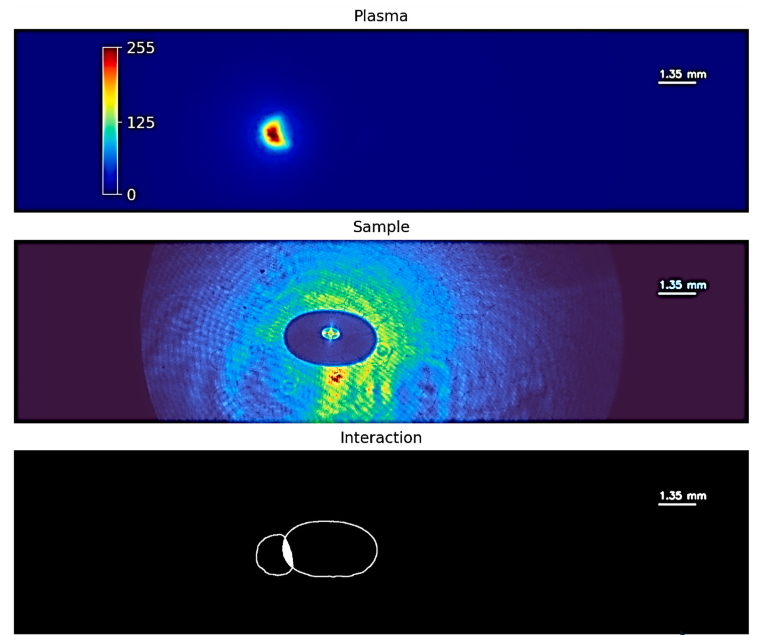
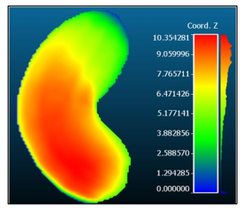

Imaging · PhD research and MSc thesis
Imaging and image processing
Extracting quantitative information from camera images: plasma and droplet imaging in my PhD, and a handheld 3D photometric-stereo system in my MSc.
Plasma expansion dynamics in levitated droplets
LIBS-AL has relied on pre-concentrating the droplet by laser heating to get a strong signal. To understand the laser–droplet interaction directly, we imaged the plasma with fast photo-detection on an iCCD and the droplet by shadowgraphy, and used the overlap of the two images, the effective ablated area, to follow how much of the droplet the plasma reaches over time.

| Laser | Nd:YAG 1064 nm, 7 ns · 0.5 mm spot · 61.22 J/cm² |
|---|---|
| Droplets | (6 ± 2) µL and (16 ± 2) µL, centre and edge alignment |
| Imaging | iCCD fast photos at 100–1000 ns delay, 200 ns gate · shadowgraphy · two Raspberry Pi HQ cameras for droplet volume |
| Effective ablated area | Up to 27% of the droplet area |
| Peak ablation | 500 ns delay (centre) · 750 ns (edge) |
| Modelling | Drag model for expansion against external pressure |
| My role | Software, formal analysis, investigation, methodology, visualisation, writing (original draft) |
Handheld photometric-stereo 3D imaging system
MSc thesis, Manipal Academy of Higher Education (2022): Design and development of photometric stereo imaging system for field applications. A portable system that recovers a normal map, a reflectance (albedo) map and a depth map from images lit from different directions, then turns the depth map into real heights and volumes.

| Controller | Raspberry Pi 4 + camera |
|---|---|
| Illumination | 24-LED RGB ring (WS2812 5050) |
| Images per capture | 12, each with different LEDs lit |
| Casing | Designed in CATIA, 3D printed |
| Software | Python, OpenCV (ArUco markers for scale), ImageJ |
| Validation | 3D-printed reference, measured on a CMM |
| Application | Grading cashews by volume: 6 grades, 85% accuracy on 30 samples |
| Feature | CMM | Calculated (mean of 8 trials) | Deviation |
|---|---|---|---|
| 1 | 10.5645 | 10.1543 | 0.4102 |
| 2 | 5.4305 | 3.55375 | 1.87675 |
| 3 | 2.7405 | 2.01845 | 0.72205 |
| 4 | 1.311 | 1.305775 | 0.005225 |
| 5 | 8.6895 | 6.4188 | 2.2707 |
| 6 | 4.32 | 1.903625 | 2.416375 |
| 7 | 2.143 | 1.176625 | 0.966375 |
| 8 | 0.9245 | 0.93745 | 0.01295 |
| 9 | 6.421 | 5.72525 | 0.69575 |
| 10 | 3.2415 | 2.444125 | 0.797375 |
| 11 | 1.5685 | 1.31055 | 0.25975 |
Values as reported in the thesis (Table 4.1). The thesis attributes the larger deviations to lens distortion, vignetting and stray light.